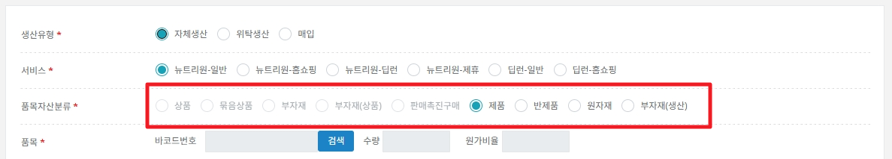
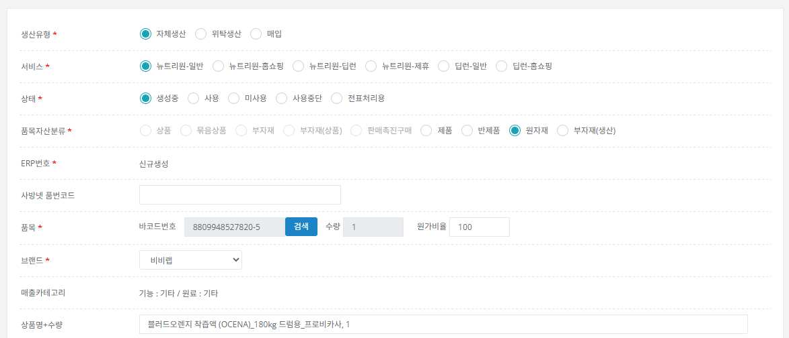
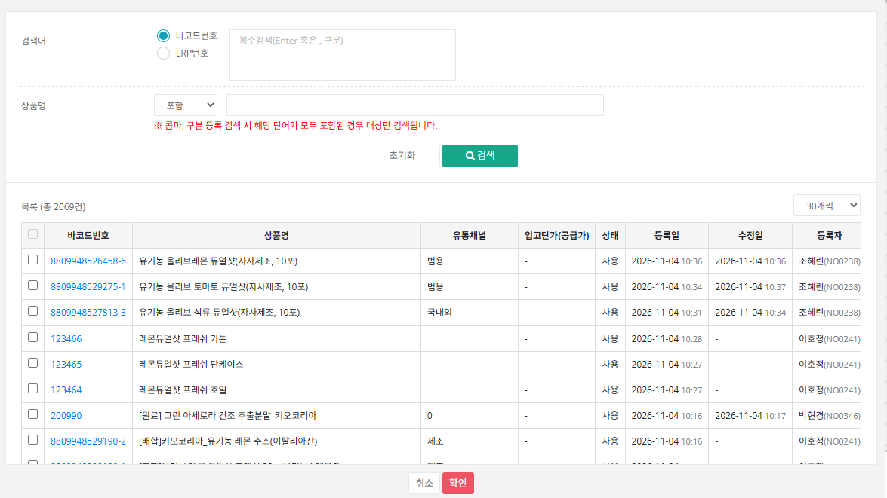
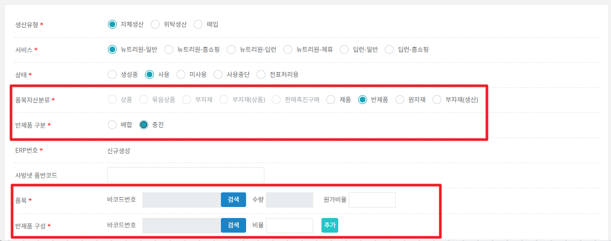
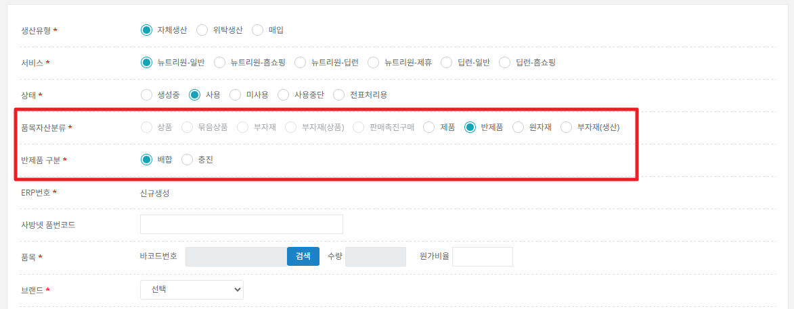
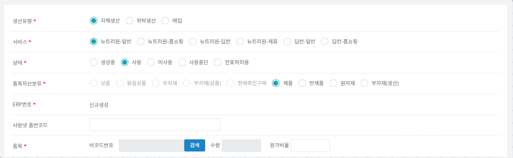

자체생산·위탁생산 제조라인이 새로 추가되었습니다. 제조라인은 라인에서 필요한 원재료 · 반제품 · 제품을 빠짐없이 모두 ERP에 등록해야 합니다. 매입 상품 등록과 달리 순서와 구성 규칙이 있으니 아래 순서대로 진행하세요.

제조라인에서는 아래 4가지 분류를 사용합니다.
| 원자재 (원재료) | 자체생산 또는 위탁생산에 들어가는 원료입니다. |
|---|---|
| 반제품 | BOM 등록 시 필요한 배합 / 충진 단계의 제품입니다. 한 단계만이 아니라 BOM 등록에 필요한 단계를 모두 등록해야 합니다. |
| 제품 | 자체생산 또는 위탁생산으로 만들어지는 완제품입니다. |
| 부자재(생산) | 생산에 쓰는 단케이스 등 포장 및 부자재입니다. |
제조라인 품목은 먼저 바코드를 준비한 뒤 ERP로 등록합니다. 분류별로 품목·바코드를 준비하는 방법이 다릅니다.
| 제품 (완제품) | 품목 · 바코드 · ERP를 세트로 등록합니다. 반드시 실제 출고를 위한 정확한 정보를 등록해야 합니다. |
|---|---|
| 반제품 (충진 · 배합) 부자재(생산) |
|
| 원료 |
|
| 생산유형 | [자체생산] 또는 [위탁생산]을 선택합니다. 매입이 기본값이므로 반드시 직접 바꿔야 합니다. |
|---|---|
| 서비스 | 뉴트리원-일반, 딥런-일반만 선택할 수 있습니다. 홈쇼핑·딥런·제휴 서비스는 제조라인에서는 비활성입니다. |
| 품목자산분류 | 제품 / 반제품 / 원자재 / 부자재(생산) 중 선택합니다. 자체·위탁생산을 선택하면 기본값은 제품입니다. |
| 반제품 구분 | 품목자산분류가 반제품일 때만 나타납니다(그 외에는 숨김). 기본값은 배합이며, 배합 / 충진 중 선택합니다. |
| 반제품 구성 | 반제품 + 충진을 선택했을 때만 나타납니다. 충진에 들어가는 구성 품목의 바코드를 [검색]으로 고르고 배합 비율을 입력합니다. |
| 품목 수량·원가율 | 제품, 반제품, 원자재, 부자재(생산)는 수량이 1로 고정(수정 불가)이고 원가율은 100입니다. 즉 제조라인 품목은 1개 바코드만 등록하는 것이 기본입니다. |
| 입고단가 | 반제품은 이 항목이 숨겨집니다(입력 불필요). 원자재·제품·부자재(생산)는 필수 입력입니다. |
| 상품명+수량 | 모든 분류가 선택한 바코드번호의 상품명 기준으로 자동 조합되며 수정할 수 있습니다. (자동 조합 방식은 추후 변경될 예정이므로 입력된 값을 확인한 뒤 필요하면 고치세요.) |
모든 단계에서 [상품마스터] → [ERP관리] → [생성요청]으로 시작하며, 공통 입력은 ERP 관리 - 등록의 기준과 같습니다.


원자재와 같은 방법으로, 품목자산분류만 부자재(생산)으로 선택합니다. 상품명 말머리는 [제조]로 구분하고, 단케이스 등 포장·부자재를 모두 등록하세요.



예) 제품 올리브 레몬 듀얼샷 프레쉬(중국, 10포)를 만드는 제조라인. 제품 바코드를 기준으로 충진·배합 반제품, 원료, 부자재의 바코드와 ERP번호를 아래처럼 만듭니다.
| 구분 | 품명 | ERP번호 | 바코드번호 | 품목번호 | 등록 안내 |
|---|---|---|---|---|---|
| 제품 | 올리브 레몬 듀얼샷 프레쉬(중국, 10포) | FINT000001 | 8809948529190 | 1100784 | 실제 판매 상품 바코드로 생성 |
| 반제품(충진) | [충진]올리브 레몬 듀얼샷 프레쉬 20g (올리브4, 레몬6) | FL000001 | 8809948529190-1 | 1100808 | 품목 관리 불필요. 상품본부 제조 관련 품목 1100808 하위로 바코드만 생성 |
| 반제품(배합) | [배합]키오코리아_유기농 레몬 주스(이탈리아산) | MX000001 | 8809948529190-2 | 1100808 | 상동 (1100808 하위 바코드만 생성) |
| 원료(제조) | [제조원료]올리브오일 (OCENA)_200kg 드럼용, 1 | RM000001 | 200914-1 | 1600025 | 동일 원료 품번 하위로 제조용 바코드 생성 |
| 원료(제조) | [제조원료]키오코리아_유기농 레몬 주스(이탈리아산), 1 | RM000002 | 200918-1 | 1600026 | 동일 원료 품번 하위로 제조용 바코드 생성 |
| 원료(위탁) | [위탁원료]올리브오일 (OCENA), 1 외 6건 (위탁원료) | RM000003 ~ RM000009 | 200815-1 등 | 1600013 등 | 동일 원료 품번 하위로 위탁용 바코드 생성 |
| 부자재(생산) | 레몬듀얼샷 프레쉬 호일 / 단케이스 / 카톤 | SB000564 ~ SB000566 | 123464 ~ 123466 | 1600001 | 동일 원료(부자재) 품번 내 바코드 생성 |
ERP 코드(ERP번호) 생성 규칙
| 생산유형 | 품목자산분류 | 품목구성 | 반제품구분 | 규칙 | 예) ERP코드 |
|---|---|---|---|---|---|
| 자체생산 | 제품 | 품목 1개 | 무관 | FINT + 숫자 6자리 | FINT000001 |
| 위탁생산 | 제품 | 품목 1개 | 무관 | FONT + 숫자 6자리 | FONT000001 |
| 자체·위탁생산 | 반제품 | 무관 | 배합 | MX + 숫자 6자리 | MX000001 |
| 자체·위탁생산 | 반제품 | 무관 | 충진 | FL + 숫자 6자리 | FL000001 |
| 자체·위탁생산 | 원자재 | 무관 | 무관 | RM + 숫자 6자리 | RM000001 |
| 자체·위탁생산 | 부자재(생산) | 무관 | 무관 | SB0 + 숫자 5자 | SB000564 |
매입 상품의 ERP 코드 규칙
| 생산유형 | 품목자산분류 | 품목구성 | 규칙 | 예) ERP코드 |
|---|---|---|---|---|
| 매입 | 부자재 / 부자재(상품) / 판매촉진 | 무관 | SB0 + 숫자 5자 | SB000045 |
| 매입 | 상품, 묶음상품 | 품목 1개 | NT0 + 숫자 5자 | NT073335 |
| 매입 | 묶음상품 | 품목 2개 이상 | NT5 + 숫자 5개 | NT507335 |
| 매입 | 상품, 묶음상품 | 무관 | HS0 + 숫자 5개 | HS003355 |
| 매입 | 상품, 묶음상품 | 무관 | ND0 + 숫자 5개 | ND000001 |
| 매입 | 묶음상품 외 | 품목 1개 | DP0 + 숫자 5개 | DP000001 |
| 매입 | 묶음상품 | 품목 2개 이상 | DP5 + 숫자 5개 | DP500001 |
| 매입 | 무관 | 무관 | HP0 + 숫자 5개 | HP000001 |